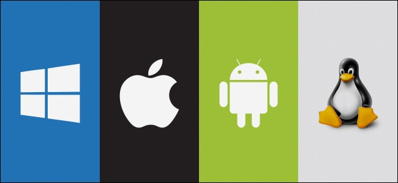

An operating system is the core set of software on a device that keeps everything together. Operating systems communicate with the devices hardware. They handle everything from your keyboard and mice to the Wi-Fi radio, storage devices, and display. In other words, an operating system handles input and output devices. Operating systems use device drivers written by hardware creators to communicate with their devices. Operating systems also include a lot of software things like common system services, libraries, and application programming interfaces (APIs) that developers can use to write programs that run on the operating system. The operating system sits in between the applications you run and the hardware, using the hardware drivers as the interface between the two. For example, when an application wants to print something, it hands that task off to the operating system. The operating system sends the instructions to the printer, using the printers drivers to send the correct signals. The application thats printing doesnt have to care about what printer you have or understand how it works. The OS handles the details.
